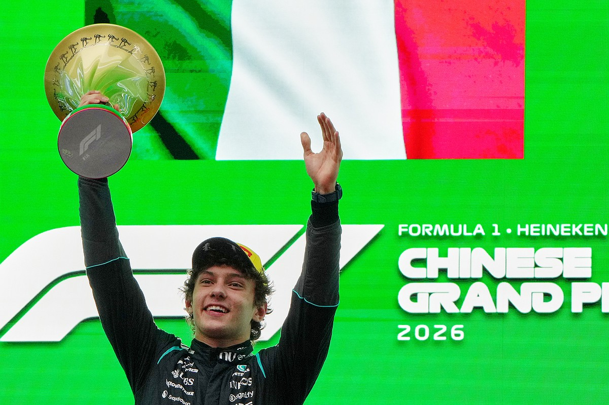

Antonelli verbreekt record

De pas negentienjarige Italiaan Kimi Antonelli heeft zondag geschiedenis geschreven door zijn eerste Grand Prix-overwinning te boeken in China. De Mercedes-coureur vertrok vanaf poleposition en controleerde het grootste deel van de race, om uiteindelijk met ruim vijf seconden voorsprong op teamgenoot George Russell te zegevieren. Daarmee werd hij de op één na jongste winnaar ooit in de Formule 1 en bezorgde hij Mercedes bovendien een overtuigende één-twee. De zege betekende ook een bijzonder moment voor Italië, dat voor het eerst in twintig jaar weer een Grand Prix-winnaar kent. Ondanks een klein schrikmoment in de slotfase hield Antonelli stand, waarmee hij zijn status als toptalent definitief onderstreepte.
Formule 1 lanceert het Wereldkampioenschap Sim Racing 2026

De Formule 1 heeft haar digitale ambities verder uitgebreid met de aankondiging van het vernieuwde Wereldkampioenschap Sim Racing voor 2026. In deze competitie nemen de beste esports-coureurs ter wereld het tegen elkaar op namens de officiële F1-teams, waarbij zij racen op virtuele versies van iconische circuits. Het kampioenschap bouwt voort op eerdere edities, waarin meerdere evenementen en een serie races de strijd om een aanzienlijke prijzenpot bepalen. Net als in voorgaande jaren worden de wedstrijden live uitgezonden via online platforms, waarmee de sport een wereldwijd publiek bereikt en een nieuwe generatie fans aanspreekt. Met deze stap onderstreept de Formule 1 het groeiende belang van sim racing als volwaardige tak binnen de autosport. Bovendien wordt het seizoen afgetrapt tijdens het grootschalige gamingfestival DreamHack, waarna de competitie wordt voortgezet in een speciaal ingerichte hightech studio van de Formule 1, die als vaste thuisbasis voor het kampioenschap moet dienen. Daarmee wil de sport niet alleen haar digitale bereik vergroten, maar ook de brug tussen virtuele en echte autosport verder versterken.
PALMER: De slimme beslissing

Volgens analyse van voormalig F1-coureur Jolyon Palmer lag de basis voor de overwinning van Kimi Antonelli in China niet alleen in pure snelheid, maar vooral in een slimme en doordachte strategische beslissing. Palmer benadrukt dat Antonelli en Mercedes al vroeg in het weekend de juiste keuzes maakten in afstelling en aanpak, waardoor hij niet alleen poleposition pakte, maar ook tijdens de race in controle bleef. Een belangrijk element was hoe Antonelli zijn banden beheerste en zijn tempo doseerde, waardoor hij constant druk kon zetten zonder zijn materiaal te overbelasten. Die volwassen benadering, zeker voor een 19-jarige, maakte het verschil ten opzichte van zijn concurrenten. Ondanks een klein moment van onzekerheid aan het einde van de race hield hij het hoofd koel, wat volgens Palmer laat zien dat zijn succes geen toeval was, maar het resultaat van inzicht, discipline en samenwerking binnen het team. Daarmee werd duidelijk dat deze overwinning niet alleen op talent berustte, maar op een combinatie van slimme keuzes en race-intelligentie